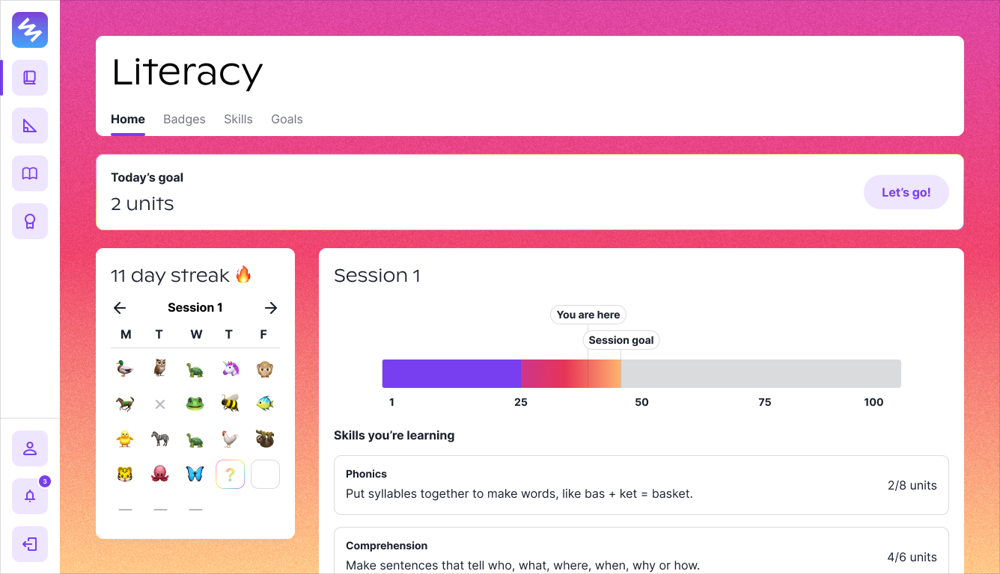
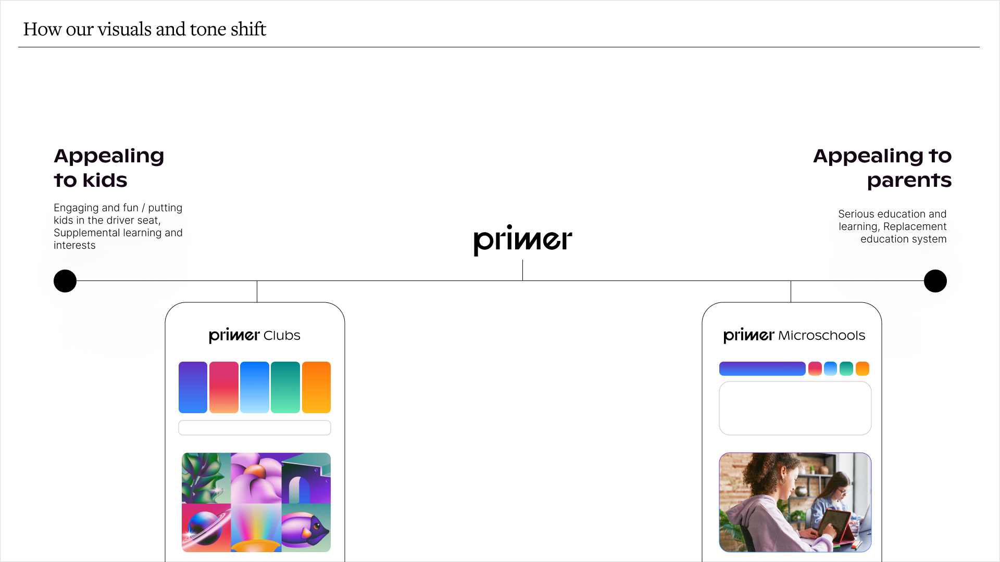

Primer went through a pivotal transition in 2022-2023.
We switched our product from Clubs to Microschools.
To support this transition, I made some updates to the design system!
This impacted the school experience for 300 students and their families, 20+ teachers, and 10+ admins.
Note: I was the only designer on the team so I was managing the design system while designing the product as well ~
A Brief History of Primer
Primer started out with Clubs. It was an online space for kids to pursue their interests.
We had clubs for chess, artists, gamers, naturalists, musicians, and many more!
Chess Club was one of the last clubs we made. Read the case study here!
In Clubs, the goal was magic! We wanted this to be an inspiring place for kids.
We went through a rebrand in early 2022 with Jessica Strelioff and Danielle LaRoy to help us create that magic.
You can read the case study by Jessica here. Here are some highlights:
In Clubs, the goal was magic! We wanted this to be an inspiring place for kids.
In late 2022, we started the transition to Microschools.
Microschools are small schools with just one class of about 15 students. Our education model is self-paced learning for all students.
To do this, we needed to create a suite of tools that support...
Students learning at their own pace and setting their own goals
Families following along their student's progress
Educators tracking and encouraging their students' learning and social needs
Admin team's admissions work and classroom tasks
An example is the student literacy dashboard below.
This allows students to track their progress and goals, while learning at their own pace.
We made many more dashboards like this, but I'll save you from seeing the massive school system.

Gradients and emojis adding that bit of magic for kids.
For Microschools, we wanted families to trust that we are a serious school
that is making waves in the education system, while keeping some of the Clubs magic (just toned down a bit).
We did another quick brand sprint with Jessica and Danielle.
Some highlights:

The brand and visual shift.
Some marketing material for the school.
They helped us redesign the website (again) to be microschools-forward.
For Microschools, we wanted families to trust that we are a serious school
that is making waves in the education system, while keeping some of the Clubs magic (just toned down a bit).
Some Principles
We didn't have official design principles, but I knew our design system should embody
bits of our operating principles and values:
Take kids seriously.
Magic is a must!
Enhance the classroom experience, don't replicate it.
Now for the exciting part... components!
Multi-select Dropdowns
I noticed the need for multi-select as we created more admin-related tasks and actions.
I expanded the dropdown component to include multi-select items, using existing base components.
Existing components I used to create the multi-select.
The multi-select dropdown in its glory.
One of the use cases was creating incident reports.
Educators should be able to select multiple at a time because incidents often aren't defined by one category.
Ahsoka vs. Mandalorian?
Tables
School systems need tables for all sorts of directories, rostering, and lists in general.
There's typically a lot of data to parse through and it can be dense.
To make the table more easy on the eyes, I added a little bit more spacing around the rows,
rather than trying to pack in as many rows as possible above the fold.
Tables and their rows.
Some use cases included directories, rosters, and documents.
Here's the student directory:
The Mos Eisley campus looks like a rowdy one.
Banners
We needed more obvious notifications and errors for our users.
Previously, our notifications to kids on Clubs were mostly about comments and posts.
Now we had uses cases like document errors, attendance alerts, and more that required action.
Banners galore.
Here's the banner in action on the parent dashboard.
Banners for all.
Illustrations
Illustrations were one of the main ways we created magic.
In Clubs, we would crop the illustrations for club cover images.
For Microschools, I isolated the main objects and used them for empty states and backgrounds.
The beautiful illustrations ready to be collaged.
Here are some places we used the illustrations!
Empty states on the parent dashboard.
I created various crops of the illustration for abstract background options on the student dashboard.
Learnings & Reflection
A design system never ends, but in a short turnaround time, the design system evolved into one that fits Microschools
while retaining the spirit of Clubs.
Though my main focus during this transition was the product, I thoroughly enjoyed getting into the details of
each component and thinking about all the various states! Excited to see how it grows as Primer builds out the schools.